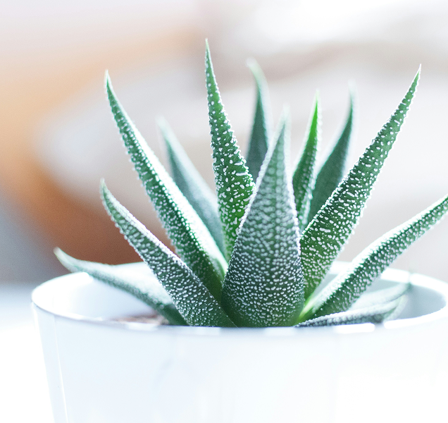
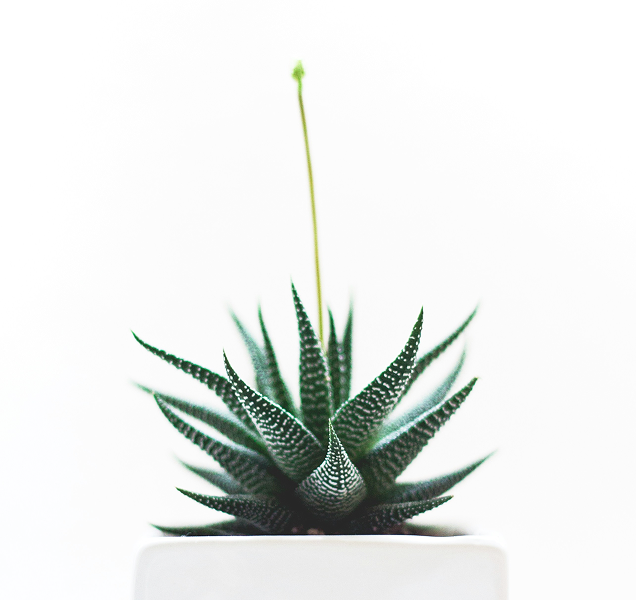
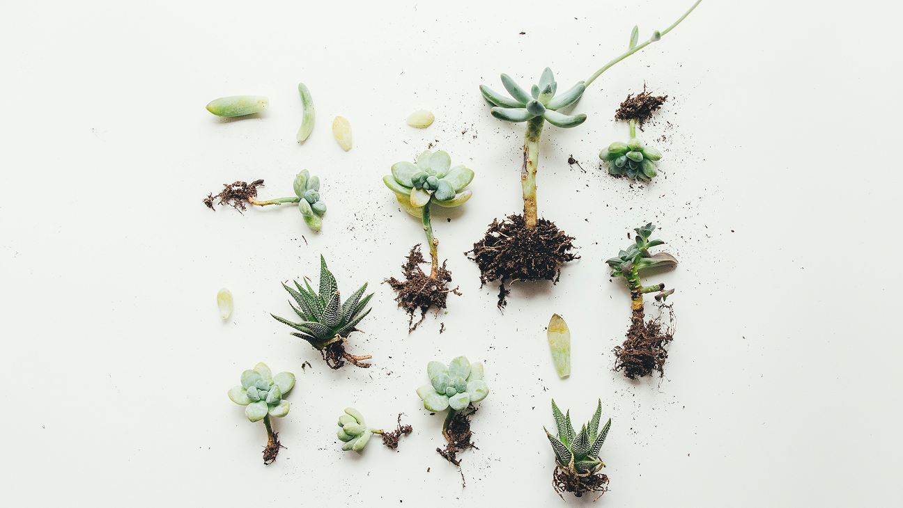
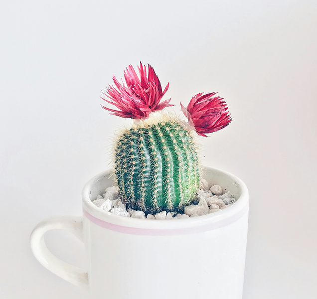
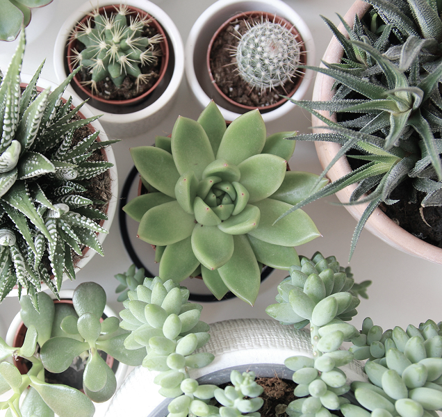

養護專欄
多肉植物澆水指南：澆多少？幾天一次才剛好
<%- include('./components/breadcrumb', {
items: [
{ name: '植藝生活', link: './article-list.html' },
{ name: '養護專欄', link: '#' },
{ name: '在陽台種一盆療癒：多肉植物打造你的綠意角落', link: '#' },
],
}); -%>
2025/01/01
多肉植物以「可愛、好養」著稱，但最常讓新手困惑的問題，往往就是——到底要多久澆一次水？ 每次要澆多少？
澆太多會爛根，澆太少又會乾扁，看似簡單的一盆小植物，其實藏著不少學問。這篇文章將帶你了解多肉植物的澆水原則、判斷方法與實用小技巧，讓你的多肉不再枯黃或爆水，永遠保持肉嘟嘟的狀態！
養多肉的小秘訣
-
盆器排水要好： 底部一定要有洞。
-
土壤要透氣：建議使用多肉專用介質。
-
澆水原則： 「乾透再澆透」，不要天天澆。
-
給光線：陽光足，多肉顏色才會更繽紛。
-
避免積水與潮濕：是新手最常犯的錯誤！


先了解多肉的「體質」
多肉植物原產於乾旱地區，葉片或莖部能儲存大量水分，因此比一般植物更耐旱但怕積水。 換句話說，它寧可「乾一點」，也不要「濕太久」。多肉的根系喜歡空氣流通、怕悶熱潮濕，一旦長期泡在濕土裡，根部就容易腐爛。
每次要澆多少才剛好？
澆水原則只有一句：「乾透再澆透」。 也就是說，等土壤完全乾了之後，一次澆到水從盆底流出為止，讓整個介質都吸飽水分。 若你每次只「噴一點水」在表面，根部反而會長不深，容易造成虛根、徒長或整株變弱。 澆完水後記得放在通風、明亮的地方，讓多餘水分能迅速蒸發。


不同環境的澆水建議
放室內
光照不足、通風差時，水分蒸發慢，應減少澆水頻率。可改為約每兩週一次，並保持窗邊明亮環境。
若空氣太潮濕（如梅雨季），可暫時停澆。
放戶外
通風好、光線強時，多肉水分蒸散快，可略為增加頻率。
但仍要確保花盆有排水孔，並避免午後烈日直曬後立刻澆水，容易造成「熱震」。